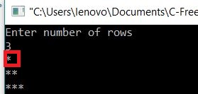
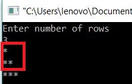
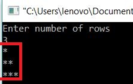

PROGRAM:
Copy
#include<stdio.h>
main()
{
int i,j,num;
printf("Enter number of rows\n");
scanf("%d",&num);
for(i=1;i<=num;i++)
{
for(j=1;j<=i;j++)
{
printf("*");
}
printf("\n");
}
}
Enter number of rows
6
*
**
***
****
*****
******
Explanation:
- The program starts with initializing
- num → To store number of rows to be printed
- i,j → Temporary variable.Where i is used for rows and j for columns
-
printf("Enter number of rows\n"); scanf("%d",&num);Taking number of rows from user - Main Logic goes here:
for(i=1;i<=num;i++) { for(j=1;j<=i;j++) { printf("*"); } printf("\n"); } - As i=1.Lets take num=3 so we are going to print 3 rows
- Iteration 1: As i=1 and i<=num → 1<=3 which is true so iteration continues
- Sub Iterations:-
for(j=1;j<=i;j++) { printf("*"); }- Sub Iteration 1:-j=1 and j<=i → 1<=1 which is true so sub iteration1 continues and prints '*' for 1 time
- Sub Iteration 2:- j=2 and j<=i → 2<=1 which is false so 2nd loop terminates for 1st iteration of 1st loop
- So till now '*' in the first row and first column is printed as shown in below screen shot
- 
- Now 'i' will be incremented by 1 and now i=2.
- printf("\n");------->Will print next line so now the cursor will be in 2nd row
- Sub Iterations:-
- Iteration 2: As i=2 and i<=num → 2<=3 which is true so iteration continues.Now we are in 2nd row
- Sub Iterations:-
for(j=1;j<=i;j++) { printf("*"); }- Sub Iteration 1:j=1 and j<=i → 1<=2 which is true so sub iteration1 continues and prints '*' for 1st time in the next row which is 2nd row and column 1
- Sub Iteration 2:j=2 and j<=i → 2<=2 which is true so sub iteration2 continues and prints '*' for 2nd time in the 2nd row and column 2
- Sub Iteration 3:j=3 and j<=i → 3<=2 which is flase so 2nd loop terminates for Iteration 2.
- So till now 2 rows are printed as shown
- 
- Now 'i' will be incremented by 1 and now i=3.
- printf("\n");------->Will print next line so now the cursor will be in 3rd row
- Sub Iterations:-
- Iteration 3: As i=3 and i<=num → 3<=3 which is true so iteration continues.Now we are in 3rd row
- Sub Iterations:-
for(j=1;j<=i;j++) { printf("*"); }- Sub Iteration 1:j=1 and j<=i → 1<=2 which is true so sub iteration1 continues and prints '*' for 1st time in the next row which is 3rd row and column 1
- Sub Iteration 2:j=2 and j<=i → 2<=2 which is true so sub iteration2 continues and prints '*' for 2nd time in the 3rd row and column 2
- Sub Iteration 3:j=2 and j<=i → 2<=2 which is true so sub iteration3 continues and prints '*' for 3rd time in the 3rd row and column 3
- Sub Iteration 4:j=3 and j<=i → 3<=2 which is flase 2nd loop terminates for Iteration 3.
- So till now 3 rows are printed as shown
- 
- Now 'i' will be incremented by 1 and now i=4.
- printf("\n");------->Will print next line so now the cursor will be in 4th row
- Sub Iterations:-
- Iteration 4: As i=4 and i<=num → 4<=3 which is false so 1st loop will terminate and come out of loops.
- So our final out put for num=3 is given below

- Iteration 1: As i=1 and i<=num → 1<=3 which is true so iteration continues